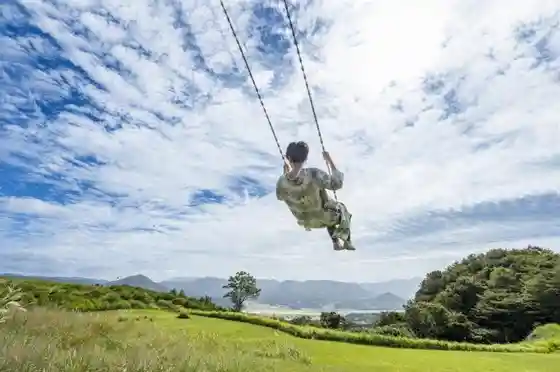
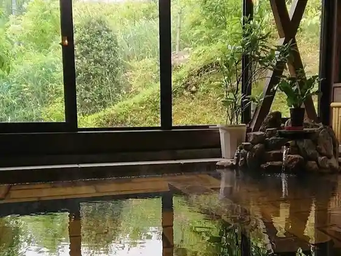
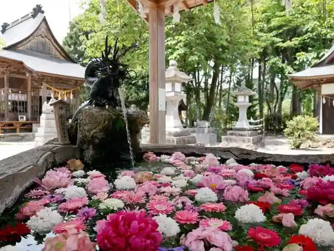

Batsu Kabuyama (Kirikabusan)
Kusu, Oita · 0973-72-1313 · Official / source link

Kuru Shima Takehiko Memorial Museum
Kusu, Oita · 0973-73-9200 · Official / source link
Yu no Mori Kusu
Kusu, Oita · 0973-72-6466 · Official / source link

Arashiyama Taki Shrine
Kusu, Oita · 0973-73-7602 · Official / source link

Bungo Mori Kikan Ko Museum
Kusu, Oita · 0973-77-2222 · Official / source link
Mori no Kureyon
Kusu, Oita · 0973-72-2424 · Official / source link
Kaku Mure (Tsu no Mure) Castle Ruins
Kusu, Oita · 0973-72-1313 · Official / source link
Kamadoga Iwa
Kusu, Oita · 0973-72-1313 · Official / source link
Mori Machinami Mi
Kusu, Oita · 0973-72-1313 · Official / source link
Tsurugahara no Kei
Kusu, Oita · 0973-72-1313 · Official / source link
Yamaura Hayamizu (Yamaurasozu) Tanada
Kusu, Oita · 0973-72-1313 · Official / source link
Shimizu Baku Sono
Kusu, Oita · 0973-72-1313 · Official / source link
Suehiro Shrine Seiho Ro (Seihoro)
Kusu, Oita · 0973-72-7151 · Official / source link
Mikazuki no Taki Park
Kusu, Oita · 0973-77-2278 · Official / source link
Viewpoint Kyukei Sha KIRIKABU HOUSE
Kusu, Oita · 0973-72-7153 · Official / source link
Kusu Kanko Bussan Kan
Kusu, Oita · 0973-72-7153 · Official / source link
Tachihata no Kei (Tachihata no Kei)
Kusu, Oita · 0973-72-1313 · Official / source link
Asada Onsen Himawari Baths
Kusu, Oita · 0973-72-5058 · Official / source link
Nishi Shii Ya (Nishishiiya) Falls
Kusu, Oita · 0973-72-1313 · Official / source link
Mishima Onsen
Kusu, Oita · 0973-72-2932 · Official / source link
Kokonoka City Onsen Mannen Baths
Kusu, Oita · 090-8767-1086 · Official / source link
Roadside Station Dowa no Sato Kusu
Kusu, Oita · 0973-72-5535 · Official / source link
Kyu Bungo Mori Kikan Ko
Kusu, Oita · 0973-72-1313 · Official / source link
Kyu Kuru Shima Shi Garden
Kusu, Oita · 0973-72-1313 · Official / source link
Jion Falls (Jion no Taki)
Kusu, Oita · 0973-72-1313 · Official / source link
Nippon Isan ! Yabakei Yuran Daichi Ni Egai Ta Sansui Emaki no Michi Woyuku
Kusu, Oita · 0979-22-1111 · Official / source link
Mannen Yama (Haneyama)
Kusu, Oita · 0973-72-1313 · Official / source link
Noda Onsen
Kusu, Oita · 0973-72-2215 · Official / source link
Hanatsubaki Onsen
Kusu, Oita · 0973-72-3940 · Official / source link
Tsurukawa Onsen
Kusu, Oita · 0973-72-4426 · Official / source link
Yamada Onsen Bijinesu Hotel Yamada
Kusu, Oita · 0973-72-1126 · Official / source link
Mikazuki no Taki Onsen
Kusu, Oita · 0973-73-2007 · Official / source link
Bosan So
Kusu, Oita · 0973-72-0187 · Official / source link
Sato no Eki Shichi Fuku Do
Kusu, Oita · 0973-72-0205 · Official / source link
Tanigawa Nai no Kei (Tanigochi no Kei)
Kusu, Oita · 0973-72-0205 · Official / source link
Kusu Town Hall
Kusu, Oita · 0973-72-1111 · Official / source link